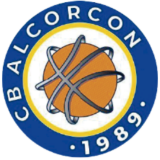

Fundado en 1989 · Alcorcón, Madrid
El CB Alcorcón ofrece programas deportivos para todas las edades y niveles. Estas son nuestras áreas de actividad para la temporada 2025-2026:
Escuela de iniciación al baloncesto para los más pequeños. Sedes en el Polideportivo Los Cantos y el C.P. Federico García Lorca.
Dos equipos benjamines en competición para la temporada 2025-2026. Primera toma de contacto con la competición federada.
Tres equipos alevines, incluyendo competición local. Desarrollo técnico y trabajo en equipo.
Tres equipos infantiles, uno en colaboración con el Real Madrid. Medalla de bronce en la temporada 2021-2022.
Tres equipos cadetes en diferentes divisiones de la Federación de Baloncesto de Madrid.
Tres equipos junior, uno en colaboración con el Real Madrid. Puente entre la cantera y el baloncesto senior.
Tres equipos U22 (Bronce, Plata y Oro). Categoría de transición previa al senior creada por la Federación.
Nuestro equipo de referencia compite en la máxima categoría autonómica de la Comunidad de Madrid.
Equipo que compite en la liga local de Alcorcón. Ascendió a Serie A en la temporada 2023-2024.
Torneo anual durante las Fiestas Patronales. En 2025 se celebra la XXXV edición.
Equipaciones y merchandising oficial del club. Solicitud disponible mediante el formulario de contacto.
Descuentos en locales colaboradores de Alcorcón para los seguidores del club.
| Año | Logro |
|---|---|
| 1993 | Campeón de 2ª División y ascenso a Liga EBA |
| 2009 | Campeón de 1ª Nacional y ascenso a Liga EBA |
| 2016 | Campeón liga local categoría Alevín |
| 2022 | Medalla de bronce Infantil A/2008 en 1ª división preferente |
| 2024 | Ascenso a Serie A del Senior Local (2º en liga) |